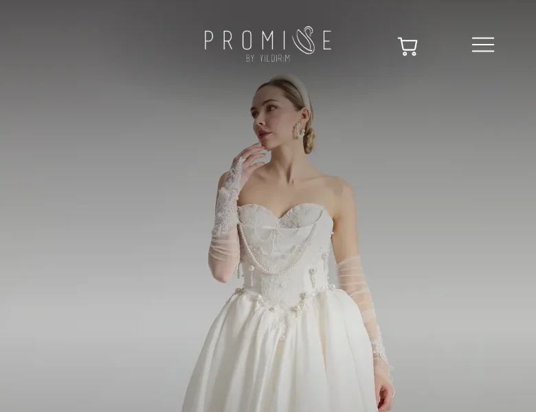
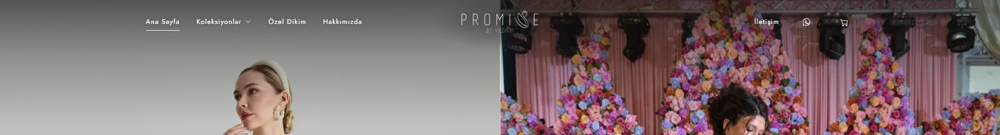
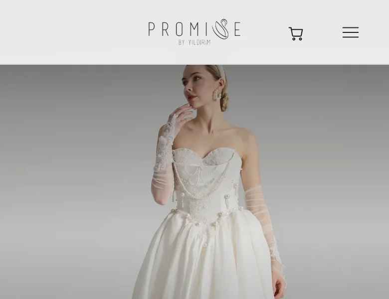
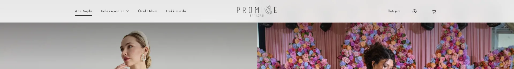
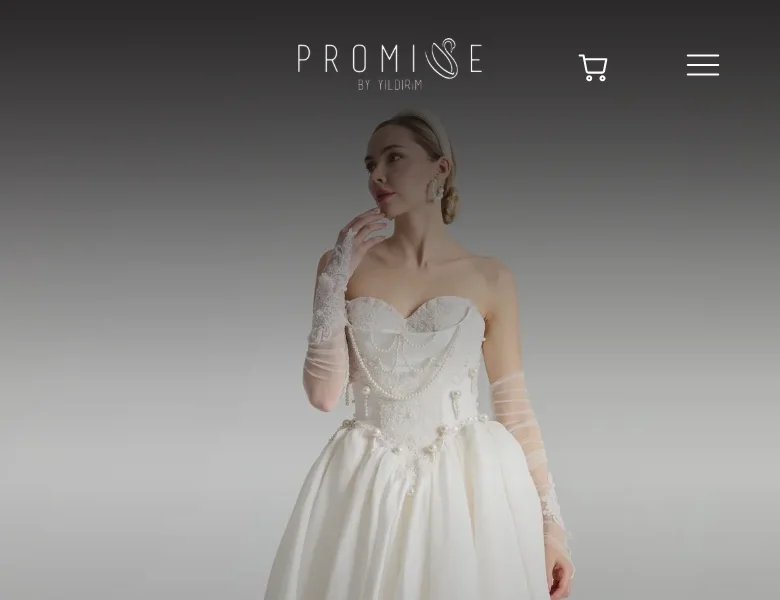
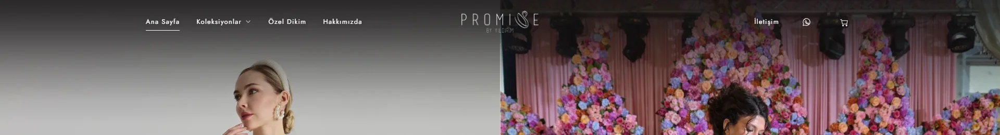
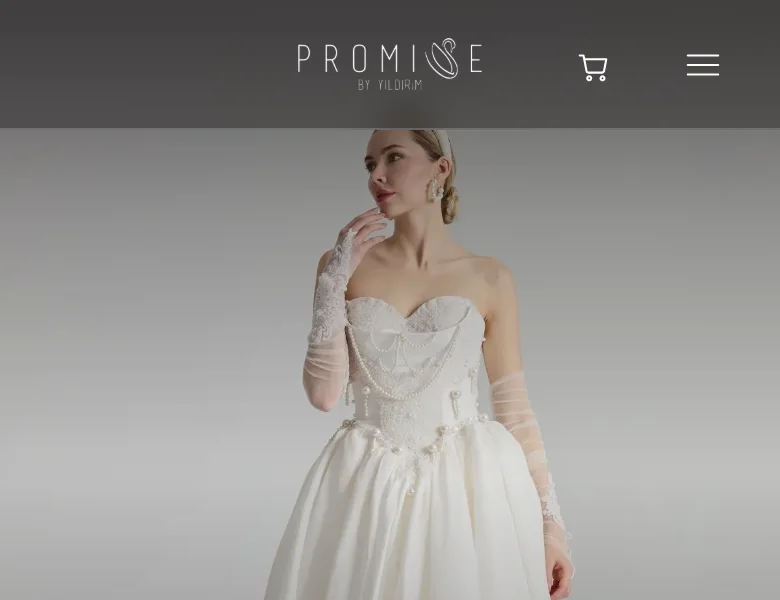
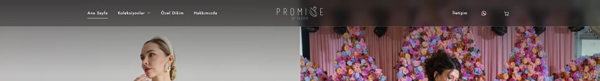
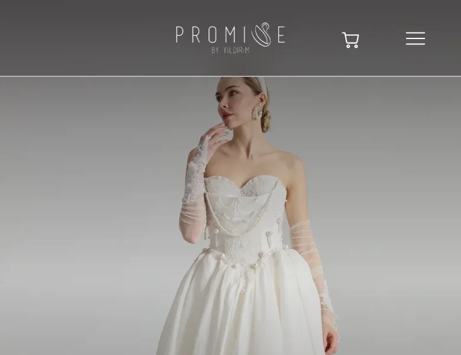
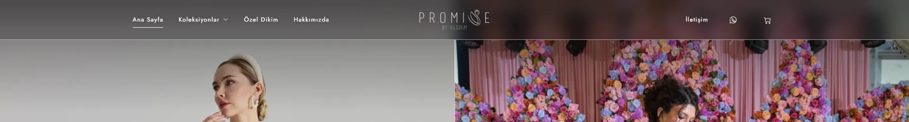

ŞU ANKİ HALİ




SEÇENEK
A
Beyaz Tül Bant
Logonun üzerinde beyaz, hafif saydam bir bant; logo ve menü koyu renge döner. Sitenin beyaz zeminiyle aynı dili konuşur, sayfa aşağı kaydırıldığında üst barın aldığı görünümle de bütünlük kurar.




SEÇENEK
B
Yumuşak Gölge
Belirgin bir bant yok; fotoğrafın üst kısmı yukarıdan aşağıya yavaşça koyulaşır. Logo beyaz kalır, fotoğraf bölünmeden bir bütün olarak görünür.




SEÇENEK
C
Koyu Buzlu Bant
Logonun arkasında koyu, buzlu cam etkili bir bant. Logo beyaz kalır ve en yüksek okunurluğu bu seçenek verir.




SEÇENEK
D
İnce Çizgili Tül
Daha açık tonda bir tül bant, altında logodaki kuğu çizgisini hatırlatan ince bir hat. C seçeneğinin daha hafif hali.



